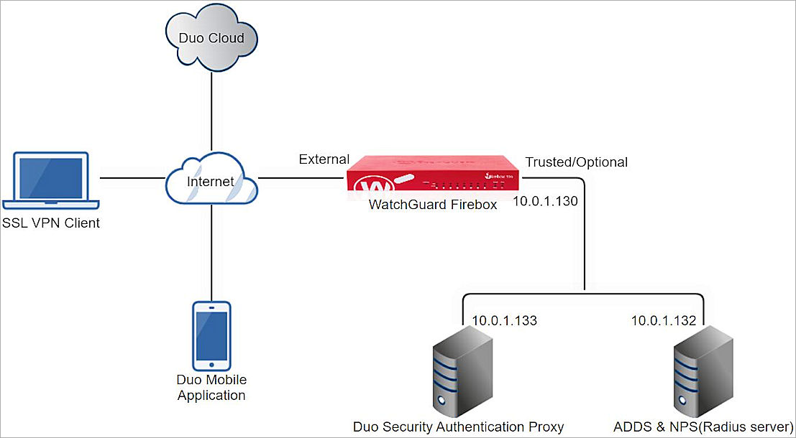
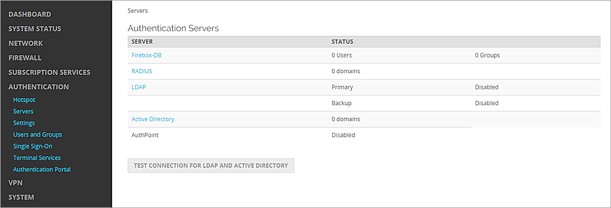
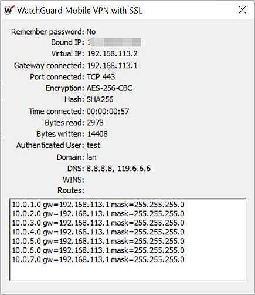

Duo Security and Firebox Integration Overview
This document describes the steps to integrate WatchGuard Mobile VPN with SSL client software download access and Mobile VPN with SSL client authentication with Duo Security’s® two-factor authentication solution. This integration uses an existing NPS server installed on a domain controller that also contains the Duo Security Authentication Proxy. For information about how to integrate Duo Security RADIUS Authentication without an NPS server, go to the Duo Security RADIUS Authentication Integration Guide
Contents
This is the workflow for two-factor authentication with Duo Security:

- A user initiates primary authentication to the WatchGuard Firebox.
- The Firebox sends an authentication request to the Duo Security Authentication Proxy.
- The Authentication Proxy completes primary authentication using RADIUS.
- The Authentication Proxy establishes a secure connection with the Duo Security service.
- The Duo Security service completes the secondary authentication.
- The Authentication Proxy receives a secondary authentication result from the Duo Security service.
- The Firebox grants the user access.
Test Topology
This diagram shows the test topology for this integration:

Platform and Software
The hardware and software used in this integration include:
- Firebox with Fireware v12.10 or higher
- Duo Security Authentication Proxy 6.1.0 on Windows
- Windows Server 2019 with Microsoft Network Policy Server (NPS) and Active Directory Domain Services
- Duo Mobile Application 4.53.0.588.1 on iOS
Configuration
To complete this integration, you must have:
- Duo account
- Duo Security Authentication Proxy
- RADIUS server (NPS)
- Active Directory Domain Services with user and group configured
- WatchGuard Firebox
Use the Duo account to log in to the Duo Service. The Duo Security Authentication Proxy acts as a bridge. It communicates with the RADIUS server, the Duo Security service in the cloud, the WatchGuard Firebox, and the Duo mobile app. The integration uses the RADIUS server for primary user authentication.
In our configuration, the Duo Security Authentication Proxy and the RADIUS server (Microsoft NPS) are located on the same subnet.
Configure Microsoft NPS Server
For instructions on how to configure Active Directory Domain Services, go to the Microsoft documentation for Active Directory.
- On the Windows server, run Server Manager.
- Select Tools > Network Policy Server.
The Network Policy Server console opens. - Select RADIUS Clients and Servers > RADIUS Clients.
- Right-click RADIUS Clients, then select New.
The Duo Proxy Properties dialog box opens. - In the Friendly Name text box, type a name.
- In the Address (IP or DNS) text box, type the IP address of the Duo Authentication Proxy. In our example, we use 10.0.1.133.
- In the Shared Secret and Confirm Shared Secret text boxes, type a shared secret key. This key is used to communicate with the Duo Authentication Proxy.
You must use the same shared secret key when you configure Duo Authentication Proxy for Primary Authentication.
- Click OK.
The RADIUS Clients section shows the added details. - Select Polices > Connection Request Policies. Make sure the default policy is enabled.
- Right-click Network Policies, then select New.
The New Network Policy page opens. - In the Policy Name text box, type a name for this policy. In our example, we use ecotest.
- Click Next.
- From the Specify Conditions section, click Add.
- Select User Groups, then click Add.
- Click Add Groups.
- In the Enter the Object Name to Select text box, type the group name. The name of this group must be the same as the name of the Active Directory group your users belong to.
- Click OK.
- Click OK.
- Click Next.
- Click Next.
- From the Configure Authentication Methods section, select the Unencrypted Authentication (PAP, SPAP) check box.
- Click Next.
- Click No.
- Click Next.
- In the Configure Settings section, click Add. In our example, we use group authentication. If you want to use user authentication, skip Steps 25—31.
- From the Attributes list, select Filter-Id, then click Add.
- Click Add.
- On the Attribute Information page, in the text box, type a group name. The name of this group must be the same as the name of the Active Directory group your users belong to.
- Click OK.
- Click OK.
- Click Close.
- Click Next.
- Click Finish.
- Right-click NPS (Local), then select Register Server in Active Directory.
- Click OK.
- Click OK.


Configure Firebox
To configure the Firebox, you must:
Configure RADIUS Authentication
To configure RADIUS authentication, from Fireware Web UI:
- Log in to Fireware Web UI (https://<your firebox IP address>:8080).
- Select Authentication > Servers.
The Authentication Servers page opens. - From the Authentication Servers list, select RADIUS.
The RADIUS page opens. - Click Add.
The Add page opens. - In the Domain Name text box, type the domain name for this RADIUS server. Users must specify this domain name on the user login page. You cannot change the domain name after you save the settings.
- From the Primary Server Settings section, select the Enable RADIUS Server check box.
- In the IP Address text box, type the IP address of the Duo Authentication Proxy.
- In the Port text box, keep the default 1812 text.
- In the Shared Secret and Confirm Secret text boxes, type a shared secret key. This key is used to communicate with the Duo Authentication Proxy Server.
- In the Timeout text box, type 60.
- In the Group Attribute text box, keep the default text.
- Click Save.


Configure Mobile VPN with SSL
To configure mobile VPN with SSL, from Fireware Web UI:
- Select VPN > Mobile VPN.
- From the SSL section, click Manually Configure.
- Select the Activate Mobile VPN with SSL check box.
- From the General section, in the Primary text box, type the public IP address (External IP address) or domain name of the Firebox. This is the IP address or domain name that Mobile VPN with SSL clients connect to by default.
- Select the Authentication tab.
- From the Authentication Server drop-down list, select the authentication server you created.
- Click Add.
- From the Authentication Server list, select your authentication server, then click Move Up to move it to the top of the list to make it the default authentication server.
Mobile VPN with SSL uses the default authentication server unless a user specifies an authentication server in the User Name text box on the Mobile VPN with SSL client. - From the Users and Groups section, from the Create New drop-down list, select the authentication server you created.
- From the adjacent drop-down list, select Group. You can add a user or a group. In our example, we add a group.
- Click Add.
The Add User or Group dialog box opens. - For Type, select Group.
- In the Name text box, type a name for the group. The name of this group must be the same as the name of the Active Directory group your users belong to.
- From the Authentication Server drop-down list, select your authentication server.
- Click Save.
- Click Save.


Configure Duo
To configure Duo, complete these steps:
- Set Up an Application
- Sync Users to Duo from Active Directory
- Configure the Duo Authentication Proxy for Primary Authentication
- Configure the Duo Authentication Proxy to Work with the Firebox
- Start the Duo Authentication Proxy
- Bind the User with the Duo Mobile Application
Set Up an Application
- Sign up for a Duo account.
- Log in to the Duo Admin Panel, then select Applications.
- Select Protect an Application.
- From the application list, select RADIUS.
- To view the values for the Integration Key, Secret Key, and API Hostname, select Protect. Copy these values because you will use them in the Configure the Duo Authentication Proxy to Work with the Firebox section.
- Click Save.

Sync Users to Duo from Active Directory
Organizations with an existing on-premises Microsoft Active Directory domain can import users, phones, and groups into Duo with directory synchronization.
For detailed instructions to sync users from Active Directory into Duo, go to Synchronizing Users from Active Directory in the Duo documentation.
Configure the Duo Authentication Proxy for Primary Authentication
The Duo Authentication Proxy is the system that validates the user password. In most cases, you must configure the Proxy to communicate with a RADIUS server.
To configure the Duo Authentication Proxy for Primary Authentication:
- Open Duo Authentication Proxy Manager.
- Configure the authproxy.cfg file. These are the sections of the file:
- [cloud]: Already configured in the Sync Users to Duo from Active Directory section.
- [radius_client]: To configure the proxy, you must specify the values of these properties:
Required Properties
Description
host The IP address of the RADIUS server
secret
A shared secret between the Proxy and the RADIUS server
For information about other optional properties, go to Duo Two-Factor Authentication with RADIUS and Primary Authentication in the Duo documentation.
For example:
[radius_client]
host=10.0.1.132
secret=password
pass_through_all=true
Configure the Duo Authentication Proxy to Work with the Firebox
To configure the Duo Authentication Proxy to work with the Firebox, create a [radius_server_auto] section in the authproxy.cfg file.
This table provides a list of the properties that you must configure in the [radius_server_auto] section of the authproxy.cfg file:
|
Properties |
Description |
|---|---|
| ikey |
The Integration key, as referenced in the Set Up an Application section of this document. |
| skey |
The Secret key, as referenced in the Set Up an Application section of this document. |
| api_host |
The API hostname, as referenced in the Set Up an Application section of this document. |
| radius_ip_1 |
The IP address of the Firebox that is connected to the Proxy. |
| radius_secret_1 |
A shared secret between the Proxy and the Firebox. |
|
client |
Set this value to radius_client, so that the Proxy uses RADIUS for primary authentication. Make sure a [radius_client] section is configured, as described in the Configure the Duo Authentication Proxy for Primary Authentication section of this document. |
For information about optional properties, go to Duo Two-Factor Authentication with RADIUS and Primary Authentication in the Duo documentation.
For example:
[radius_server_auto]
ikey=DIEXXXXXXXXXXXXXXXXF
skey=hrPXYMuKjfXXXXXXXXXXXXXXXXmw7zBz1nLV4wVC
api_host=api-XXXXXXXX.duosecurity.com
radius_ip_1=10.0.1.130
radius_secret_1=password
client=radius_client
port=1812
failmode=safe
pass_through_all=true
This is an example of a complete configuration file:

After you modify the Proxy configuration file, the user clicks the Validate button in Duo Authentication Proxy Manager to verify the configuration file is correct. If the user uses NPS as the RADIUS server, then the validation of the [radius_client] section fails and this output message appears:

This is because NPS does not support the Status-Server message [Code 12 Status-Server (experimental) in RFC2865].
The Duo Security Authentication Proxy validate packet includes this Status-Server message. The WatchGuard Firebox RADIUS request packet does not include this Status-Server message.
This failure does not affect any function and can be ignored.
Start the Duo Authentication Proxy
To start the Duo authentication proxy:
- In the Duo Authentication Proxy Manager UI, click Start Service.
Bind the User with the Duo Mobile Application
After the process to sync users from Active Directory into Duo, bind the user with your mobile device.
For detailed instructions about how to bind the user with your mobile device, go to Activating Duo Mobile in the Duo documentation.
Test the Integration
To test the integration of your Mobile VPN with SSL, authenticate with a mobile token on your mobile device. You can authenticate with a passcode or a push notification.
If you select the passcode authentication, you must type the password followed by a comma and append the passcode from the Duo Mobile App.
In this example, we show the push authentication method (users receive a push notification in the mobile app that they must approve to authenticate).
- Open your Mobile VPN with SSL client.
- In the Server text box, type the external IP address of the Firebox.
- Type your user name and password.
- Click Connect.
- Approve the authentication request on your mobile device.
You are logged in successfully.
